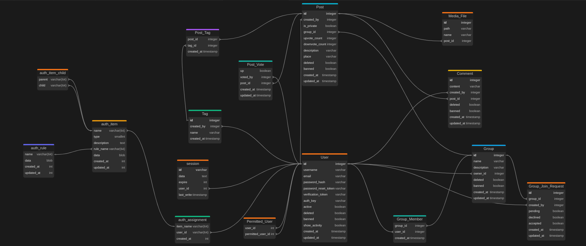

FITstagram
- Autoøi
- Radim Mifka
xmifka00@stud.fit.vutbr.cz -
BE, FE, CI/CD
- Miroslav Bálek
xbalek02@stud.fit.vutbr.cz -
BE, FE, DB
- URL aplikace
- https://nitte.cz/
U¾ivatelé systému pro testování
Uveïte prosím existující zástupce v¹ech rolí u¾ivatelù.
| Login |
Heslo |
Role |
| admin |
ib3wVqnRY4bQRLm |
Administrátor |
| moderator0 |
s6sATaFffBPZICZ |
Moderátor |
| stepanka08 |
xPassword1242 |
U¾ivatel |
Video
Odkaz na Video
Implementace
Jednotlivé pøípady pou¾ití v aplikaci jsou realizovány pomocí kontrolerù. Ní¾e je uveden pøehled hlavních
kontrolerù a jejich úèelu.
-
AuthController.php
Správa autentizace: pøihlá¹ení, odhlá¹ení, registrace u¾ivatele.
-
CommentController.php
Operace s komentáøi: vytváøení, mazání komentáøù.
-
GroupController.php
Správa skupin: vytváøení, úprava, mazání a zobrazení informací o skupinách.
-
GroupMembershipController.php
Správa èlenství ve skupinách: správa ¾ádostí a odstraòování èlenù.
-
LanguageController.php
Nastavení jazykových preferencí: zmìna jazyka a správa lokalizace.
-
PostController.php
Operace s pøíspìvky: vytváøení, mazání, hlasování a zobrazování pøíspìvkù.
-
SiteController.php
Obecné stránky: domovská stránka, informace, kontaktní formuláø.
-
TagController.php
Správa ¹títkù: pøidávání, úprava, mazání a zobrazování ¹títkù.
-
UserController.php
Správa u¾ivatelù: informace o profilu, úprava údajù a seznam u¾ivatelù, blokovaní a odstranìní.
Bezpeènostní prvky
-
Role-Based Access Control (RBAC)
Systém øízení pøístupu zalo¾ený na rolích implementovaný pomocí Yii2 RBAC manageru.
Oprávnìní jsou definována v migrations/m241121_180103_init_rbac.php
- HTTPS Zabezpeèení
-
Google reCAPTCHA v3
Ochrana proti automatizovaným útokùm a spamu. Implementována pøedev¹ím pøi odesílání kontaktního formuláøe.
ReCAPTCHA je nakonfigurována v souboru .env pomocí následujících promìnných:
- RECAPTCHA_SITE_KEY - Veøejný klíè pro inicializaci reCAPTCHA na frontend
- RECAPTCHA_SECRET_KEY - Privátní klíè pro ovìøení na backend
Databáze

Pøehled systému
Aplikace je postavena na frameworku Yii2 a vyu¾ívá moderní technologie pro vývoj a nasazení.
Celé prostøedí je kontejnerizováno pomocí Dockeru, co¾ zaji¹»uje konzistentní bìhové prostøedí bez ohledu na platformu.
Frontend je plnì responzivní a aplikace podporuje vícejazyèné rozhraní díky modulu Yii2 i18n. Aktuálnì jsou dostupné jazykové verze pro èe¹tinu a angliètinu.
Instalace
Instalace na server
Projekt vyu¾ívá CI/CD pipeline pomocí GitHub Actions. Po pushnutí do vìtve main:
- Spustí se automatická kontrola kódu pomocí PHPStan (level 8)
- V pøípadì úspì¹né kontroly se provede deployment na FTP server
- Automaticky se aplikují databázové migrace
Detailní konfiguraci pipeline najdete v souboru .github/workflows/main.yml
Pro nastavení aplikace se pou¾ívá soubor .env, který se automaticky vytvoøí pøi nahrávání na server.
Softwarové po¾adavky
V¹echny softwarové po¾adavky jsou zapouzdøeny v Docker containeru pro snadnìj¹í pøenositelnost.
- PHP 8.3.*
- Node 20.*
- Composer 2.7.2
- Docker a Docker Compose (pro lokální vývoj)
Framework a knihovny
- Yii2 Framework
- Tailwind CSS pro stylování
- PHPStan pro statickou analýzu kódu
Inicializace databáze
Pro inicializaci databáze postupujte následovnì:
- Spus»te pøíkaz
php yii migrate/fresh, který vytvoøí novou strukturu databáze.
- Poté spus»te pøíkaz
php yii seed, který naplní databázi testovacími daty.
Celý proces je plnì automatizovaný, aby usnadnil vývoj.